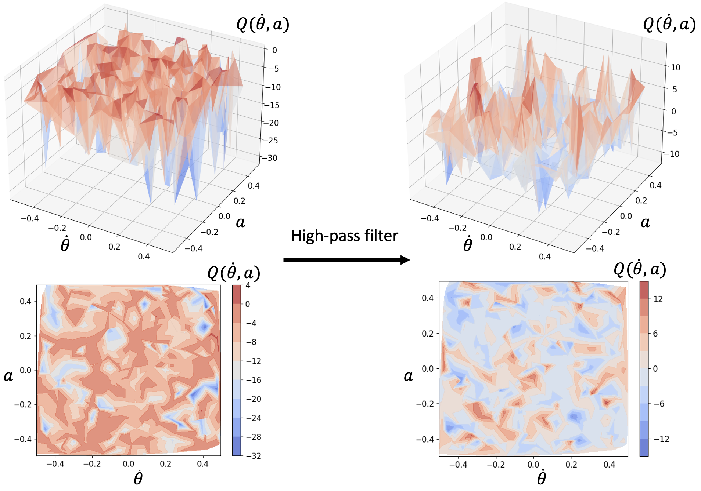

Abstract
Reinforcement learning for control over continuous spaces typically uses high-entropy stochastic policies, such as Gaussian distributions, for local exploration and estimating policy gradient to optimize performance. Many robotic control problems deal with complex unstable dynamics, where applying actions that are off the feasible control manifolds can quickly lead to undesirable divergence. In such cases, most samples taken from the ambient action space generate low-value trajectories that hardly contribute to policy improvement, resulting in slow or failed learning. We propose to improve action selection in this model-free RL setting by introducing additional adaptive control steps based on Extremum-Seeking Control (ESC). On each action sampled from stochastic policies, we apply sinusoidal perturbations and query for estimated Q-values as the response signal. Based on ESC, we then dynamically improve the sampled actions to be closer to nearby optima before applying them to the environment. Our methods can be easily added in standard policy optimization to improve learning efficiency, which we demonstrate in various control learning environments.
Benefits of High-Pass Filtering:
High-pass filters remove "flat" regions in the Q-value landscape, making it easier to locate actions that lead to local peak Q-values.
In the figure below, high-pass filters enhance the visibility of peaks, enabling faster local improvement towards the optimum.

An illustration of the effect of using high-pass filters on the
Q-value landscapes in the inverted pendulum environment.